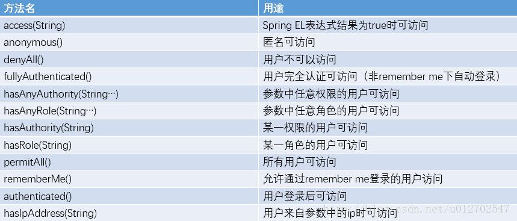

Welcome to Spring Security
配置步骤
1. pom
<dependencies>
<dependency>
<groupId>org.springframework.security</groupId>
<artifactId>spring-security-web</artifactId>
</dependency>
<dependency>
<groupId>org.springframework.security</groupId>
<artifactId>spring-security-config</artifactId>
</dependency>
<dependency>
<groupId>org.thymeleaf.extras</groupId>
<artifactId>thymeleaf-extras-springsecurity4</artifactId>
</dependency>
</dependencies>
2. 配置WebSecurityConfigurerAdapter，SpringSecurty核心配置文件
package tools.perkinelmer.Config;
import org.springframework.context.annotation.Bean;
import org.springframework.context.annotation.Configuration;
import org.springframework.security.config.annotation.authentication.builders.AuthenticationManagerBuilder;
import org.springframework.security.config.annotation.web.builders.HttpSecurity;
import org.springframework.security.config.annotation.web.builders.WebSecurity;
import org.springframework.security.config.annotation.web.configuration.EnableWebSecurity;
import org.springframework.security.config.annotation.web.configuration.WebSecurityConfigurerAdapter;
import org.springframework.security.core.userdetails.UserDetailsService;
import tools.perkinelmer.security.CustomUserService;
@Configuration
@EnableWebSecurity
public class WebSecurityConfig extends WebSecurityConfigurerAdapter {
@Bean
UserDetailsService customUserService(){ //注册UserDetailsService 的bean
return new CustomUserService();
}
@Override
protected void configure(AuthenticationManagerBuilder auth) throws Exception {
auth.userDetailsService(customUserService()); //user Details Service验证
}
@Override
protected void configure(HttpSecurity http) throws Exception {
http.authorizeRequests()
.anyRequest().authenticated() //任何请求,登录后可以访问
.and()
.formLogin()
.loginPage("/login")
.defaultSuccessUrl("/main")
.failureUrl("/login?error")
.permitAll() //登录页面用户任意访问
.and()
.headers().frameOptions().disable()
.and()
.logout().permitAll(); //注销行为任意访问
}
@Override
public void configure(WebSecurity web) throws Exception {
//解决静态资源被拦截的问题
web.ignoring().antMatchers("/**/*.js",
"/**/*.css",
"/**/*.jpg",
"/**/*.png");
}
}
3. 配置MVC,主要作用添加登录页面，主页面，页面映射，从而达到通过配置文件配置就能使thymeleaf从后台出来，内部应用起作用
package tools.perkinelmer.Config;
import org.springframework.context.annotation.Configuration;
import org.springframework.web.servlet.config.annotation.ViewControllerRegistry;
import org.springframework.web.servlet.config.annotation.WebMvcConfigurerAdapter;
@Configuration
public class WebMvcConfig extends WebMvcConfigurerAdapter {
@Override
public void addViewControllers(ViewControllerRegistry registry) {
registry.addViewController("/login").setViewName("login/login");
registry.addViewController("/main").setViewName("main/main");
}
}
4. 配置用户，角色，并将权限交给SpringSceurity来处理
SysRole
package tools.perkinelmer.entity;
public class SysRole {
private Integer id;
private String name;
public Integer getId() {
return id;
}
public void setId(Integer id) {
this.id = id;
}
public String getName() {
return name;
}
public void setName(String name) {
this.name = name;
}
}
SysUser
package tools.perkinelmer.entity;
import java.util.List;
public class SysUser {
private Integer id;
private String username;
public Integer getId() {
return id;
}
public void setId(Integer id) {
this.id = id;
}
public String getUsername() {
return username;
}
public void setUsername(String username) {
this.username = username;
}
public String getPassword() {
return password;
}
public void setPassword(String password) {
this.password = password;
}
public List<SysRole> getRoles() {
return roles;
}
public void setRoles(List<SysRole> roles) {
this.roles = roles;
}
private String password;
private List<SysRole> roles;
}
自定义UserDetailsService让权限控制交给springSecrity
package tools.perkinelmer.security;
import java.util.ArrayList;
import java.util.List;
import org.springframework.beans.factory.annotation.Autowired;
import org.springframework.security.core.authority.SimpleGrantedAuthority;
import org.springframework.security.core.userdetails.UserDetails;
import org.springframework.security.core.userdetails.UserDetailsService;
import org.springframework.security.core.userdetails.UsernameNotFoundException;
import tools.perkinelmer.Mapper.UserMapper;
import tools.perkinelmer.entity.SysRole;
import tools.perkinelmer.entity.SysUser;
/**
* 用于将用户权限交给 springsecurity 进行管控
*/
public class CustomUserService implements UserDetailsService{
@Autowired
private UserMapper userMapper;
@Override
public UserDetails loadUserByUsername(String username) throws UsernameNotFoundException {
SysUser user = userMapper.findByUserName(username);
if(user == null){
throw new UsernameNotFoundException("用户名不存在");
}
List<SimpleGrantedAuthority> authorities = new ArrayList<>();
//用于添加用户的权限。只要把用户权限添加到authorities 就万事大吉。
for(SysRole role:user.getRoles())
{
authorities.add(new SimpleGrantedAuthority(role.getName()));
System.out.println(role.getName());
}
return new org.springframework.security.core.userdetails.User(user.getUsername(),
user.getPassword(), authorities);
}
}
5. 相关页面
写好配置文件指定的登录页面，如果不指定的话springSecurty有自己默认的，登录成功后写好指定的主页，这里都需要用thymeleaf模板来做，这样权限控制可以有 sec:authorize="hasRole(‘ROLE_ADMIN’)“来控制哪些元素显示与否，用户是否有权限访问 权限名称需要是ROLE_开头的
6. SpringSercity配置需要注意点
- 首先当我们要自定义Spring Security的时候我们需要继承自
WebSecurityConfigurerAdapter来完成，相关配置重写对应 方法即可。 - 我们在这里注册CustomUserService的Bean，然后通过重写configure方法添加我们自定义的认证方式。
- 在
configure(HttpSecurity http)方法中，我们设置了登录页面，而且登录页面任何人都可以访问，然后设置了登录失败地址，也设置了注销请求，注销请求也是任何人都可以访问的。 - permitAll表示该请求任何人都可以访问，
.anyRequest().authenticated(),表示其他的请求都必须要有权限认证。 - 这里我们可以通过匹配器来匹配路径，比如antMatchers方法，假设我要管理员才可以访问admin文件夹下的内容，我可以这样来写：
.antMatchers("/admin/**").hasRole("ROLE_ADMIN")，也可以设置admin文件夹下的文件可以有多个角色来访问，写法如下：.antMatchers("/admin/**").hasAnyRole("ROLE_ADMIN","ROLE_USER") - 可以通过
hasIpAddress来指定某一个ip可以访问该资源,假设只允许访问ip为210.210.210.210的请求获取admin下的资源，写法如下.antMatchers("/admin/**").hasIpAddress("210.210.210.210") - 更多的权限控制方式参看下表：

分析理解
1. SpringSecurity运行机制
- 被认证请求被
FilterSecurityInterceptor拦截看有没有对应权限，如果没有抛异常给ExceptionTranslationFilter ExceptionTranslationFilter缓存原请求，利用LoginUrlAuthenticationEntryPoint入口跳转到登录界面- 用户在登录界面填写登录信息后，提交，经过
UsernamePasswordAuthenticationFilter对填写的信息和从数据源中获取的信息进行对比，成功则授权权限，并通过登录成功后入口SavedRequestAwareAuthenticationSuccessHandler跳转回原请求页面（跳转时有从缓存中对请求信息的恢复） - 登录完成后返回原请求，由
FilterSecurityInterceptor进行权限的验证（大部分工作有AbstractSecurityInterceptor来做），根据登录成功后生成的Authentication（Authentication authentication = SecurityContextHolder.getContext().getAuthentication();由SecurityContextHolder持有，而其中的SecurityContext由SecurityContextPersistentFilter保存到session中从而实现request共享）中的权限和请求所需的权限对比，如果一致则成功执行，如果权限不正确则返回403错误码 - 以上均是默认情况下，没有经过配置的执行过程，当然可以自定义
LoginUrlAuthenticationEntryPoint和SavedRequestAwareAuthenticationSuccessHandler实现根据不同的请求所需权限跳转到不同登录页面及授权成功后根据权限跳转到不同页面，以及返回403错误码时跳转到对应的页面（AccessDeniedHandlerImpl）在下一篇中会对其进行实现
2. 根据这个机制我们可以做的事
- 自定义
LoginUrlAuthenticationEntryPoint实现跳转到不同登录页，如用户订单请求跳转到用户登录页，管理中心请求跳转到管理员登录页 - 自定义
SavedRequestAwareAuthenticationSuccessHandler实现直接点击登录成功后跳转到指定的页，如用户登录后跳转到首页，管理员登陆后跳转到管理中心 - 通过
AccessDeniedHandlerImpl处理虽让登录成功确没有访问权限的问题 - 自定义
SimpleUrlAuthenticationFailureHandler来实现登录失败的情况，主要是用户不存在或密码错误问题。这种情况下能够实现从哪个登录页面过来的还是返回原登录页，并携带错误信息 SimpleUrlAuthenticationSuccessHandler
3. thymeleaf
这个模板使用必须是通过后台获得内部组件才能与java代码融合起作用，这里我们需要注意的地方是需要通过后台访问的页面都要 用WebMvcConfigurerAdapter配置下
@Configuration
public class WebMvcConfig extends WebMvcConfigurerAdapter {
@Override
public void addViewControllers(ViewControllerRegistry registry) {
registry.addViewController("/login").setViewName("login/login");
registry.addViewController("/main").setViewName("main/main");
}
}
4. 角色权限控制
springsecurity的角色权限控制，可通过配置角色组来作为角色，原来的角色作为权限，之后这个权限选项就可以作为控制页面元素显示，指定url访问的控制元素
package tools.perkinelmer.security;
import java.util.ArrayList;
import java.util.List;
import org.springframework.beans.factory.annotation.Autowired;
import org.springframework.security.core.authority.SimpleGrantedAuthority;
import org.springframework.security.core.userdetails.UserDetails;
import org.springframework.security.core.userdetails.UserDetailsService;
import org.springframework.security.core.userdetails.UsernameNotFoundException;
import tools.perkinelmer.Mapper.UserMapper;
import tools.perkinelmer.entity.SysAuthority;
import tools.perkinelmer.entity.SysRole;
import tools.perkinelmer.entity.SysUser;
/**
* 用于将用户权限交给 springsecurity 进行管控
*
*/
public class CustomUserService implements UserDetailsService{
@Autowired
private UserMapper userMapper;
@Override
public UserDetails loadUserByUsername(String username) throws UsernameNotFoundException {
SysUser user = userMapper.findByUserName(username);
if(user == null){
throw new UsernameNotFoundException("用户名不存在");
}
List<SimpleGrantedAuthority> authorities = new ArrayList<>();
//用于添加用户的权限。只要把用户权限添加到authorities 就万事大吉。
for(SysRole role:user.getRoles())
{
List<SysAuthority> authoritys = role.getAuthoritys();
for(SysAuthority authority:authoritys){
authorities.add(new SimpleGrantedAuthority("ROLE_"+authority.getAuthority_id().toString()));
}
}
return new org.springframework.security.core.userdetails.User(user.getUsername(),
user.getPassword(), authorities);
}
}
WangXinping
Software Architect Engineer
My research interests include software development, architecture design, programming languages, data structure, algorithms, etc.